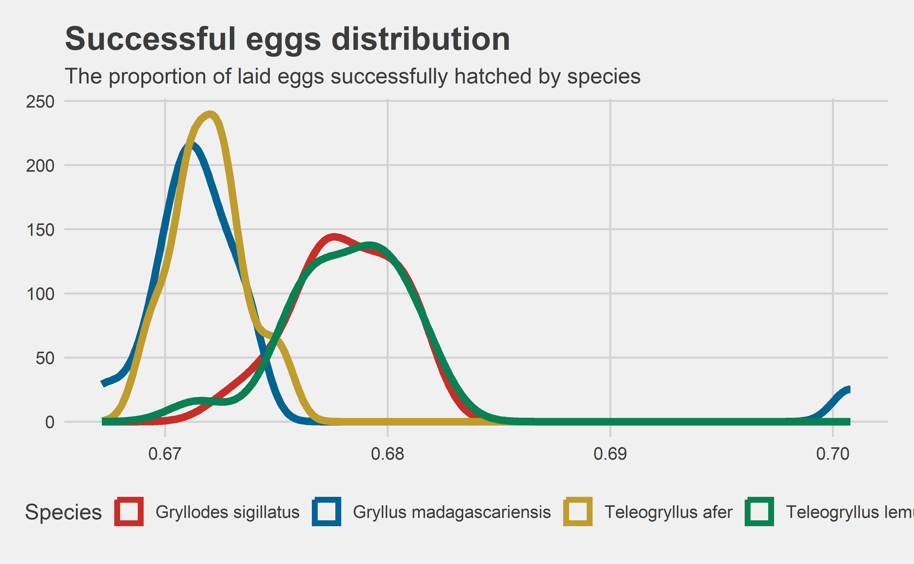
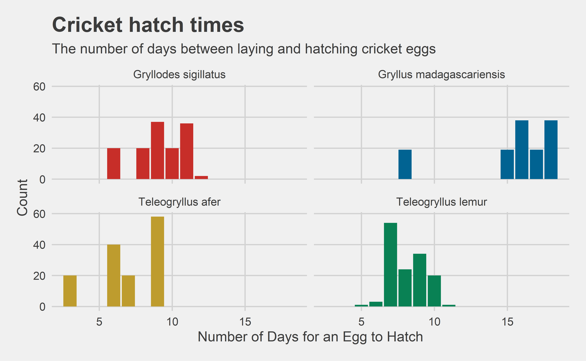

Like me, you probably eat too much meat. Many of us have heard of the negative consequences of meat consumption: high per-pound greenhouse gas emissions, deforestation, and livestock abuse come to mind. While there may never be a perfect substitute for a three-pound porterhouse on your birthday, shifting our daily protein sources to a more sustainable option could make a world (no pun intended) of difference.
Enter the humble cricket. Crickets can be cultivated in much smaller spaces and generate less CO2 and methane than traditional (western) protein sources. Once harvested, crickets can be ground into flour and used to make food, such as crackers. Researchers at the University of Antananarivo (in Madagascar) are trying to find the ideal cricket species for such cultivation, perhaps leading to a new way of getting our daily protein that relies less on the evils we associate with factory farming in the United States. Let’s break down the experiment design.
The Experiment
Researchers are comparing four species of crickets: Teleogryllus lemus, Gryllodes sigillatus, Teleogryllus afer, and Gryllus madagascariensis. In this experiment, 150 crickets from each species are incubated in a lab-controlled setting. Temperature and humidity were controlled, and each species had 12 hours of light and dark per day. Unlimited food, in the form of chicken feed, and unlimited water were provided to each cricket. Researchers allowed each cricket to grow individually inside a ventilated plastic box. They measured each cricket’s body length and weight measurements weekly and conducted checks every three days to see if a cricket had molted (that is, shed its exoskeleton and entered a new growth stage).
Upon reaching adulthood, 20 females and 20 males from each species were selected at random and paired together to breed eggs. Every 24 hours, researchers check for eggs, count them, and separate them to allow them to hatch. They then record the number of eggs laid and the number successfully hatched. We are left with a pair of datasets: one for reproduction data about the eggs and the other about the growth rates of the crickets when they hatch!
Our Plan
Given these data, our job as an analyst is to help decide which species is best for future cultivation. Ideally, we want to maximize the amount of cricket flour generated per unit of time (in our case, per day). Since the entire cricket is ground into flour, this is equivalent to trying to find the maximum amount of body weight added per cricket per day. With that number, any future cricket farmer could simply multiply by the number of crickets they expect to have to arrive at total flour production estimates per day.
Let’s take a Bayesian approach. We will build two models: the first will give a posterior distribution of the number of eggs laid per species, and the second will be a posterior distribution of growth per day by species. Finally, we can multiply the posterior samples of each model together to arrive at a final distribution that is a combination of the number of eggs laid and the amount of growth each cricket will experience per day. In other words, total meat per day! Once we find the best species under these ideal conditions, future research can vary the breeding conditions to find optimal conditions for that species.
Modeling
There are a few things for which I want to control. First, let’s explore the temperature and humidity data to see if they should be included. After all, if there was some climate control failure, we need to ensure that the environmental variation didn’t cause a change in cricket production. Fortunately, the researchers also provide temperature and humidity data.
We it’s clear from our table that there is very little variance in temperature. I’m confident that adding it to our model would introduce unnecessary noise. Besides, in a real-world setting, asking a cricket farmer to control his environment within less than a single degree of variance is unreasonable, even if statistically optimal. The humidity has slightly higher variance, so let’s look at it more closely.
Click here for code
temp |>ggplot(aes(x = relative_humidity_percent)) +geom_histogram(color ="black", fill = LIGHT_BLUE) +labs(x ="Relative humidity (%)",y ="Count",title ="Relative humidity of cricket enclosures",subtitle ="Measurements are taken hourly" ) +theme(axis.title =element_text())
Okay, the humidity appears to be approximately normally distributed. But these measurements are taken hourly! Unfortunately, because researchers only check for hatched eggs once per day, correcting for hourly change in humidity doesn’t do us much good. The better bet would be to use the daily mean. However, it is reasonable to expect much lower variance when we take the averages. Let’s see if that pans out.
Click here for code
temp |>separate(timestamp, into =c("date", "time"), sep =" ") |>mutate(date =as.Date(date, format ="%m/%d/%y")) |>group_by(date) |>summarise(humidity =mean(relative_humidity_percent)) |>ggplot(aes(x = humidity)) +geom_histogram(color ="black", fill = LIGHT_BLUE) +labs(x ="Relative humidity (%)",y ="Count",title ="Relative humidity of cricket enclosures",subtitle ="Measurements shown are daily averages" ) +theme(axis.title =element_text())
As expected, we have much lower variance when we take the daily mean instead of the hourly measurements. Notice the \(x\) axis: the difference between the lowest and highest observation is just over 1%! Including such a consistent variable in our model is very unlikely to prove significant, and it increases the complexity (and thereby the possibility of unnecessary noise) of our model. Thus, since the researchers did such a good job controlling the environment, we will keep the environmental factors out of our model. We are left with one dataset per model. Let’s go one at a time.
The Egg Production Model
Let’s take a sample of our reproduction dataset to see what we are working with.
We can start to see the structure of the data. Each row represents a single mating pair (paired_adults) on a specific date (date_of_laying). The eggs laid that day hatch at a later date (date_of_hatching), and the number of those eggs that successfully hatch are provided as well (hatched_eggs). The first question that comes to my mind is whether any of the four species has a significantly higher hatch rate than the others. Let’s have a look.
Click here for code
p_success <- repro |>group_by(paired_adults, species) |>summarise(eggs_laid =sum(eggs_number, na.rm = T),hatched =sum(hatched_eggs, na.rm = T) ) |>mutate(succ_prop = hatched / eggs_laid)p_success$id <-1:nrow(p_success)p_success |>ggplot(aes(x = succ_prop, color = species)) +geom_density(linewidth =2) +scale_color_wsj() +labs(x ="Proportion of eggs hatched",y ="Density",color ="Species",title ="Successful eggs distribution",subtitle ="The proportion of laid eggs successfully hatched by species" )

The four species seem to neatly stick to one of two modes. But again, we have to observe the \(x\) axis: there is next to no variance among any of the four species! The two modes are just about \(0.0672\) and \(0.0676\). Either we have a set of four strangely uniform cricket species, or there is a date collection error somewhere. Either way, hatch rate probably isn’t going to help us determine the best species. Since all four species have an approximately equal hatch rate, all that matters to us is the absolute number of eggs hatched. Let’s model it!
Building the model
The only variable left to use as a predictor is the species of each mating pair. We have already eliminated hatch rate and both environmental factors that we were given by researchers, so we won’t be able to correct for other predictors. That’s a shame, but a univariate model is better than none. To maintain the independence of our observations, we don’t want to include every pair multiple times. If we did, then we would have reason to believe that the eggs hatched by one row is impacted by the eggs of another row. After all, they are the same breeding pair!
To maintain independence, let’s take the mean of each mating pair’s reproductive life. In doing so, we lose some data but gain statistical independence, without which we can’t do a model at all. Once we take that mean, we can run a Bayesian regression model with our species predictor and arrive at a per-species posterior distribution of the number of eggs successfully hatched per day. To make life easier, let’s see if we can use a common prior. The easiest one to check is the normal prior. Let’s plot our observed density against a normal distribution with the sample mean and standard deviation.
Looks good enough to me! Using data visualization is a quick and dirty way to select a prior, but with a model as simple as ours and an observed distribution so close to normal (thanks, Central Limit Theorem!), I’m hoping that it will at least do better than throwing an un-informative prior at it and hoping for the best.
So we’re ready for our first of two models! Let’s run it with 5000 iterations with our normal prior with observed mean and standard deviation!
eggs_tib <-exp(as_tibble(model_eggs)) colnames(eggs_tib) <-c("a", "b", "c", "d")eggs_tib <- eggs_tib |>mutate(b = b + a,c = c + a,d = d + a )colnames(eggs_tib) <-sort(unique(growth$species))eggs_tib |>pivot_longer(cols =everything(), names_to ="species", values_to ="eggs") |>ggplot(aes(x = eggs, fill = species)) +geom_histogram(bins =50) +scale_fill_wsj() +facet_wrap(~species, nrow =2) +theme(legend.position ="none") +labs(x ="Predicted number of eggs laid (per day)",y =paste0("Count (n = ", ITERS, ")"),title ="Posterior distribution of eggs laid per day",subtitle ="Only Gryllodes sigillatus shows lower egg production" )
And here we have it! Not particularly sexy, but we have posterior samples. So far, it looks like most of the species are going to have about the same distribution of eggs hatched per day. We can verify that assumption with a 95% posterior confidence interval.
As we assumed, our posterior confidence intervals are extremely close across all four species (even identical when rounded to 2 significant figures). There is a small dip for Gryllodes sigillatus, but not an appreciable one. Hopefully we get better results when we build our second model and combine them.
Growth rate model
Now that we have an idea of how many eggs each mating pair will produce for each species, it’s time to model how much those newly-hatched crickets will grow every day. Let’s sample our growth data to see what we’re working with.
Again, we run into an issue with a lack of useful predictors. Let’s talk about why. Although we don’t see them in this sample, there are five life stages in the data, L1 through L5. Each of these life stages strictly increases cricket size. After all, if they weren’t growing, there’s no reason to molt. So if we want to maximize our cricket weight output, we will always be harvesting the crickets at stage L5. Thus, to build our second model we will only use the data that is from stage L5, when the crickets are the largest they will ever be.
Additionally, because we are only concerned with the amount of cricket flour produced, the body length of each cricket is of no help. If a cricket is larger in length but smaller in weight, it ultimately produces less flour. Finally, the date columns don’t help us either, since our model will be time-agnostic. Observe that the time it takes for each species’ eggs to hatch only effects the “start-up” time of a new cricket farm. Once the first batch of eggs hatches, a farmer will produce new crickets every day. So time-to-hatch isn’t relevant in real-world scenarios unless some species take so much longer to hatch that there may be a financial cost to a delayed startup. Let’s quickly see if that’s the case by visualizing the distribution of hatch times by species.
Click here for code
repro |>mutate(hatchdays =difftime(date_of_hatching, date_of_laying, units ="days")) |>ggplot(aes(x = hatchdays, fill = species)) +geom_histogram(stat ="count") +scale_fill_wsj() +facet_wrap(~ species, nrow =2) +labs(x ="Number of Days for an Egg to Hatch",y ="Count",title ="Cricket hatch times",subtitle ="The number of days between laying and hatching cricket eggs" ) +theme(legend.position ="none", axis.title =element_text())

There are some modest differences, but probably not enough to impact cricket harvesting at scale. Thus, unfortunately, we are again limited to only using species as a predictor. But notice that the variable we are interested in isn’t in the data! If we want to measure growth rate, our response variable is the amount of weight gained by each cricket from hatching to life stage L5. Thus, we can manipulate our data to create this variable.
Grouping by individual cricket and species, we can measure growth_time as the number of days between hatching and stage L5. Dividing its final weight by this number of days, we arrive at our response variable: average growth per day for each cricket/species pair! Let’s see if that new variable approximates a normal distribution to help us choose a prior.
This time, our response variable doesn’t well-approximate a normal distribution. To make our life easier, let’s just an un-informative prior this time. It’s modeling time!
Because our response variables are so small, and because no one is harvesting a small number of crickets in practice, let’s visualize our posterior after multiplying the results by 100. That will show us a distribution of growth rates for 100 crickets at a time. This is only for visualization purposes though: we will use per-cricket growth when we build our final results.
Click here for code
growth_tib <-as_tibble(model_growth)[,1:4]colnames(growth_tib) <-c("a", "b", "c", "d")growth_tib <- growth_tib |>mutate(b = b + a,c = c + a,d = d + a )colnames(growth_tib) <-sort(unique(growth$species))growth_tib |>pivot_longer(cols =everything(), names_to ="species", values_to ="rate") |>ggplot(aes(x = rate*100, fill = species)) +geom_histogram(bins =100) +scale_fill_wsj() +facet_wrap(~species) +theme(legend.position ="none", axis.title.x =element_text()) +labs(x ="Growth rate (per 100 crickets, per day)",y =paste0("Count (n = ", ITERS, ")"),title ="Posterior daily growth rate",subtitle =paste("Results are multiplied by 100 for ease of legibility. Model","coefficients \nare per-cricket." ) )
We seem to have a winner so far! The Gryllus madagascariensis are clearly the crickets with the highest per-day growth rate from stage L1 to L5. It is reasonable to expect that when we multiply our posterior sample from our two models together, Gryllus madagascariensis will be our winner. But there’s only one way to be sure, and that’s putting our final results together.
Putting the models together
Since we ran both models for exactly 5000 iterations, we can combine their results by simply multiplying them together row-wise. This has the effect of asking “for a given simulated number of eggs and a simulated growth rate, how much total weight will that many crickets generate that day?” That’s our research question, so let’s find out!
Click here for code
melt_growth <- growth_tib |>pivot_longer(cols =everything(), names_to ="species", values_to ="growth") melt_eggs <- eggs_tib |>pivot_longer(cols =everything(), names_to ="species", values_to ="eggs") post_meat_per_day <-tibble(species = melt_growth$species,growth = melt_growth$growth,eggs = melt_eggs$eggs,meat_per_day = growth * eggs)post_meat_per_day |>ggplot(aes(x = meat_per_day, fill = species)) +geom_histogram(bins =50) +scale_fill_wsj() +facet_wrap(~species, nrow =2) +theme(legend.position ="none", axis.title.x =element_text()) +labs(x ="Meat production per day",y =paste0("Count (n = ", ITERS, ")"),title ="Posterior distribution of meat production per day",subtitle ="Meat production values are shown per breeding pair." )
And just like that, we’re done! We have our final confidence intervals, and our assumption based on our growth rate model was correct. Gryllus madagascariensis is the winner by far! They produce a full order of magnitude more meat per day than any other species.
However, it’s important to remember our limitations. Because the data were generated under controlled lab conditions, there weren’t many relevant variables to include in the model. But now that we know which species will produce the most meat per day under lab conditions, further research focusing exclusively on Gryllus madagascariensis could help find the ideal conditions for cultivating these hearty crickets.
I hope you enjoyed this analysis! Bayesian statistics doesn’t get enough love, and I think we found exactly what we were looking for. As always, if you want to say thanks for my work, feel free to buy me a coffee or come say hello or ask questions on my Discord server! Have a good day, and I’ll see you in the next one!